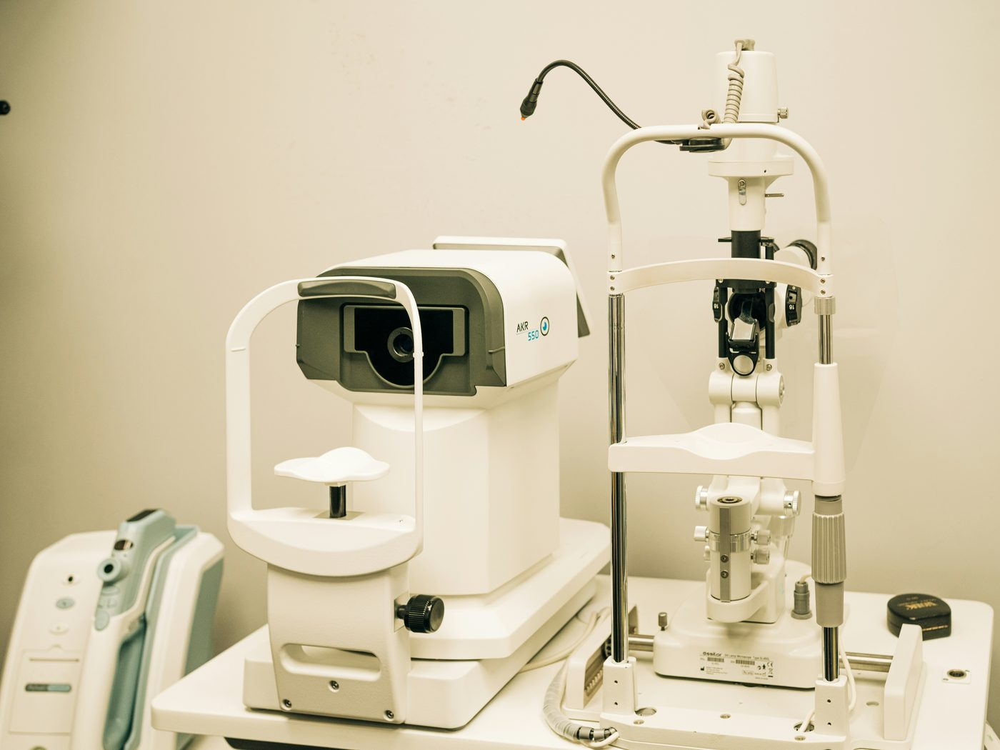
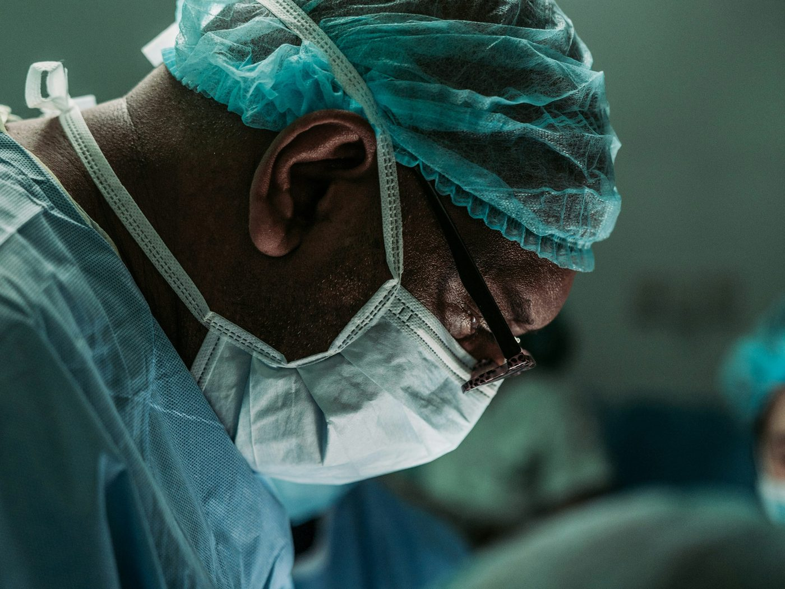
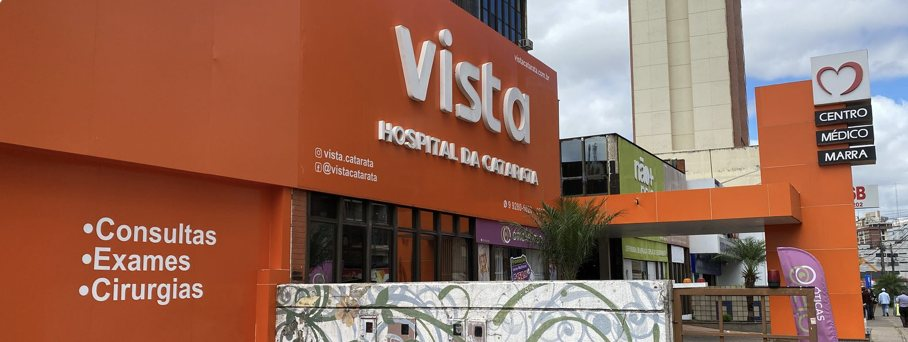
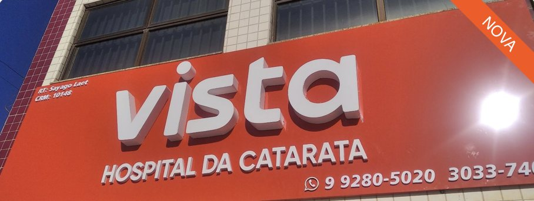

Avaliação
Entendemos seu caso e suas necessidades, levantamos hipóteses e solicitamos exames do nosso extenso parque tecnológico para confirmá-las.

A catarata turva a visão aos poucos e desbota as cores de sua vida. Aqui, a indicação vem depois de uma avaliação completa, diagnóstico, exames e escolha cuidadosa de suas lentes intraoculares, que melhor pode te auxiliar para a sua vida.
ContinuarUm caminho só, para qualquer condição ocular. A catarata é uma delas — glaucoma, retinopatias e pterígio percorrem as mesmas três etapas, da primeira consulta ao acompanhamento depois do tratamento.
Entendemos seu caso e suas necessidades, levantamos hipóteses e solicitamos exames do nosso extenso parque tecnológico para confirmá-las.

Avaliamos os exames complementares oftalmológicos para entendermos melhor a sua situação específica e propomos então a melhor abordagem, personalizada para você.

O tratamento de sua condição é realizado em uma de nossas unidades, seja ele clínico ou cirúrgico, com acompanhamento dedicado posteriormente.
Qualquer que seja a condição, o trajeto começa pela avaliação.
Agendar avaliaçãoDuas unidades no Distrito Federal.

Unidade
Endereço: St. A Sul QSA 02 lotes 02/03 Ed. Centro Medico Marra - Taguatinga, Brasília - DF, 72015-020
Seg a Sex: 08:00 às 18:00
Sábado: 08:00 às 12:00

Unidade
Endereço: St. M QNM 17 Ed. Center One Loja 1 - Ceilândia, Brasília - DF, 72215-178
Seg a Sex: 08:00 às 18:00
Sábado: 08:00 às 12:00